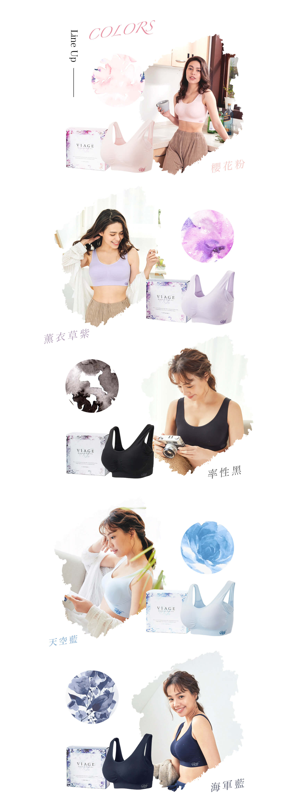
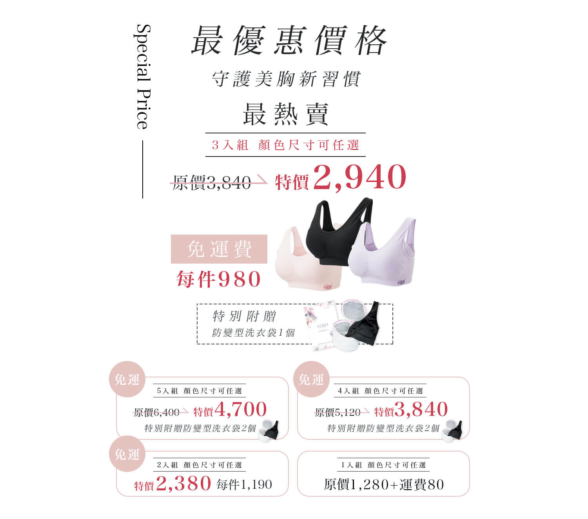

Feb
19
哺乳卻讓胸部下垂了！
該怎麼辦才好呢？
以前只有聽說，生孩子罩杯會變大。

而且我自認為自己胸型算挺不錯的，
還幻想說變大不就更加分了？但沒想到，
雖然懷孕後從原本的C脹大，變成了大D。
老公也很開心，但我脹奶真的很不舒服。
加上我孕吐嚴重，又有肚子又有胸，
真的每天都腰痠背痛，腳更是水腫！
到後期，我甚至不舒服到根本無法再穿內衣
原以為生完小孩後就可以回到當初（好傻好天真），
沒想到是惡夢的開始…。

(我的胸部在生孩子前，就算不穿內衣，
胸型也很渾圓！
但小孩出生後，因為持續餵母乳餵到退奶，
結果胸部也因為退奶而且胸型整個明顯下垂!
看著以前自己的照片
真的難以想像才一年多，我的胸型已經下垂了這麼多….
以前braT是我平常最喜歡穿的品項。
因為不用穿內衣，穿起來感覺沒有束縛很舒適~
但沒想到，隨著時間過去，加上小孩每天這樣吸我的奶頭，
胸部形狀越來越鬆弛了，
穿braT後下垂的形狀超明顯，
真的很不美觀。後來就不敢再只穿braT了。
再看到我媽現在連穿鋼圈內衣都無法抵擋日漸下垂的狀態，
真的很擔心…

後來才知道下垂奶還有個別稱，叫「布袋奶」。
每天照鏡子都覺得很厭世，到後來根本不想再照鏡子，
雖然老公說不嫌棄我，但是自己真的很沮喪。

為了回復胸型，我上網找了很多方法，也做了一些胸部的健身、按摩，
在看文章的妳也試過嗎？真的有效嗎？
我覺得很無感，一天天過去真的不知道自己到底為誰辛苦為誰忙？


有天我在網路上看到，有件日本進口的viage晚安內衣
好像是專門為胸部下垂的女性設計的。
後來剛好又在臉書廣告看到，
官網介紹viage晚安內衣的特殊編織法，
可以讓肉肉維持在胸前，
防止躺下時肉肉四散。
還有在胸部下緣以及背部有加壓設計，
可以引導肉肉往正確的位置集中，
幾個晚上後胸部就能靠形狀記憶維持長時間的挺立！
而且價格比我平常穿的黛O芬便宜多了。

之前google的時候穿過的人都說
穿起來很舒服、完全不咬肉、穿著睡完全不會影響睡眠
還有人說穿了1個月 感覺胸型有變渾圓!!!
我就死馬當活馬醫的訂了三件替換穿試試看。
貨到的當天晚上我就穿上，
原以為之前習慣睡覺不穿內衣，
一開始一定會超不適應，
但意外的舒適，真的可以穿著一覺到天亮。

無鋼圈、布料很親膚、彈性也十分足夠

高斜邊的設計可以防止副乳的出現

還有可拆式凹凸胸墊，幫助外擴的胸部集中托高
因為很好穿，所以到貨後我幾乎天天都穿這件。
穿了後才意識到鋼圈內衣有多麼不舒服。
因此，雖然它叫晚安內衣，但我幾乎是整天都穿著，
希望這件晚安內衣可以24小時幫我塑型>_
<
大約穿了快一個月後，
某天洗完澡照鏡子突然發現
自己的布袋奶有恢復正常的跡象！

原本走鐘下垂的胸部
開始回到原本屬於它的位置！
真的讓我太感動了～
前幾天經過內衣店想說試穿下內衣時，
賣內衣的小姐還誇獎我：
「都已經當媽媽了，但胸部維持得很好耶！」

很多類似晚安內衣的產品都只有一個尺寸。
但viage是少有尺寸很齊全的內衣。
大家可以放心！
當媽媽後才知道漂亮的內衣內褲都不好穿．．．．．．
以前愛的蕾絲款穿起來永遠比不上素素但彈性好的布料舒服

只有生過孩子才知道當媽媽的辛苦，
如果如果產後媽媽也跟我一樣有
【胸部下垂】【布袋奶】的困擾，
真心建議可以穿穿看哦！
也可以從懷孕期間就開始穿，
做好保養，產後才不會太難救XD
下方就可以購買囉！
